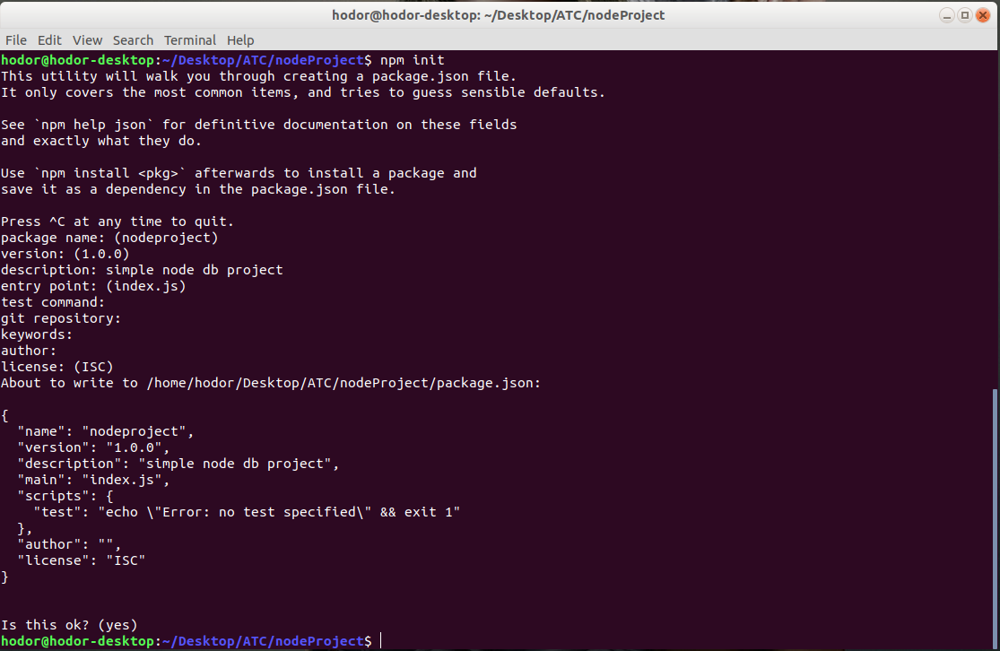
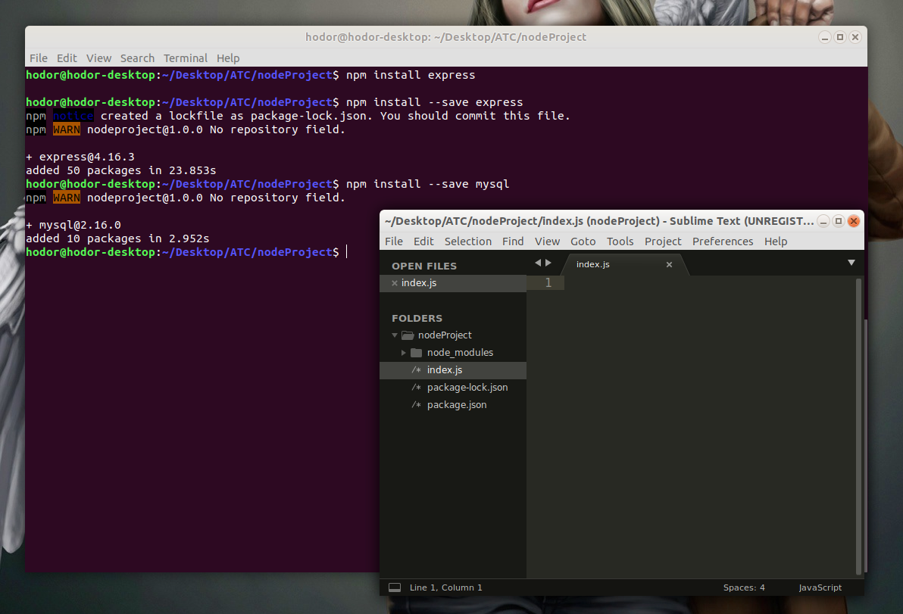

For this article i am assuming that you are familier with Node.js and Express, if not its okay and i hope you'll learn something new today.
Specially Javascript Framework are designed to Used with MongoDB/NoSQL instead of MySQL or MariaDB, But that doesn't mean we can't use it. In this article we are going to explore How Node.js is connected with MySQL database using Express framework.
Installation Of Node.js
- Go to Nodejs.org. Download and Install Node.js. Node comes with its own package manager called node package manager (npm) using which we are going to install Express and MySQL packages.
Create Directory with any name (i am naming it as "nodeProject" ) in your System, inside which we are going to store our source code. open that directory (nodeProject) in any text editor, I am using Sublime Text in Ubutnu 18.04.
Installing Express and MySQL packages using npm
Open Node.js terminal in (nodeProject) directory. or else if you are using linux open terminal in program directory we had created above.- Type
npm initHit Enter till the interactive command completes.
It Will load npm modules for our project and create several files.

- Type
npm install --save expressTo install express. --save options save the packages in npm module directory. - Use
npm install --save mysqlTo install MySql Client. - Final Steps is to create index.js file. Which is the base file for our app and where we are going to write out program. 
Installing MySQL Server
One last thing we are going to need is mysql server to store our database.There are various software avalible but i will use XAMPP here. Download And Install Xampp into your system and Comeback for the rest of article.